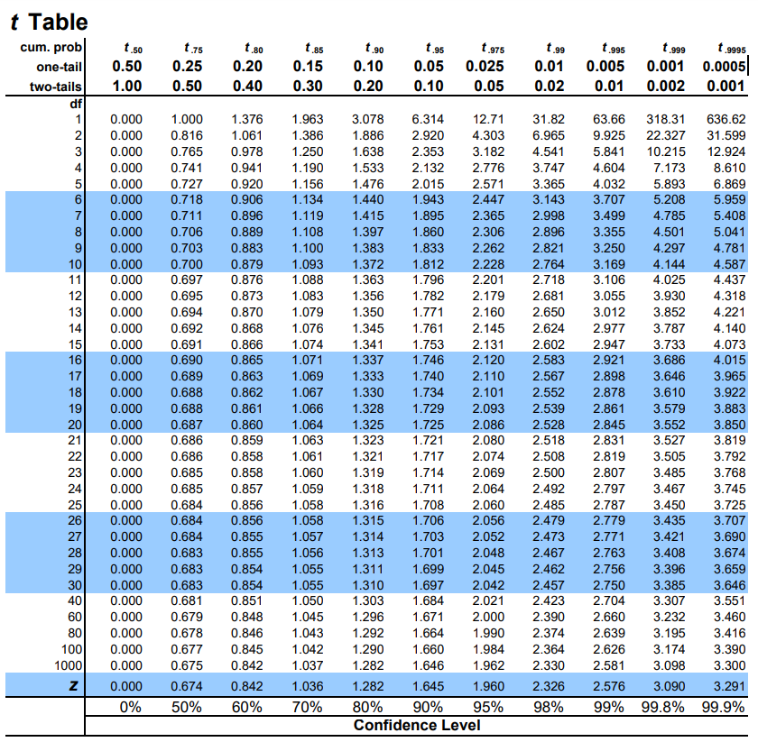

15 Small sample tests
If the sample size \(n\) is less than 30 (\(n < 30\)), it is known as a small sample. For small samples, the sampling distributions commonly used are the \(\chi^2\) (chi-square), \(F\), and \(t\) distributions. The study of the sampling distribution of a statistic for small samples is known as small sample theory.
15.1 Tests based on Student’s t distribution (t-tests)
Assumptions of the t-test
The parent population from which the sample is drawn is normal.
The sample is a random sample.
The population standard deviation \(\sigma\) is unknown.
15.1.1 Test for a single population mean
Consider a population with mean \(\mu\), where \(\mu\) is unknown. We take a random sample of size \(n\) (\(n < 30\)) from the population and calculate the sample mean \(\overline{x}\). We want to test whether the population mean \(\mu\) is equal to a known constant \(\mu_0\), based on the sample mean.
The null hypothesis to be tested is:
\(H_0\): \(\mu\) = \(\mu_0\)
The alternative hypothesis may be either:
\(H_1\): \(\mu\) < \(\mu_0\) (left-tailed alternative)
\(H_1\): \(\mu\) > \(\mu_0\) (right-tailed alternative)
\(H_1\): \(\mu\) \(\mathbf{\neq}\) \(\mu_0\) (two-tailed alternative)
The test statistic is:
\[t = \frac{\overline{x} - \mu_0}{\dfrac{s}{\sqrt{n}}} \tag{15.1}\]
where \(s^2 = \dfrac{\sum_{i=1}^{n}\left( x_i - \overline{x} \right)^2}{n - 1}\).
Under the null hypothesis, \(t\) follows a \(t\) distribution with \(n - 1\) degrees of freedom.
15.1.2 Decision rule for the t test
Let \(t\) be the calculated value, degrees of freedom = \(n - 1\), and \(\alpha\) be the level of significance. We reject the null hypothesis if:
\(|t| > t_{\alpha/2}\) ; for a two-tailed test
\(t > t_{\alpha}\) ; for a right-tailed test
\(t < -t_{\alpha}\) ; for a left-tailed test
Here \(t_{\alpha}\) or \(t_{\alpha/2}\) is obtained from the table of Student’s \(t\) distribution for the given degrees of freedom \(n - 1\) and level of significance \(\alpha\). If the calculated value of the test statistic is greater than the critical value from the table, we reject the null hypothesis. Otherwise, we do not have enough evidence to reject it.
Example 15.1 Based on field experiments, a new variety of green gram is expected to give a yield of 12 quintals per hectare. The variety was tested on 10 randomly selected farmers’ fields. The yields (quintals per hectare) were recorded as 14.3, 12.6, 13.7, 10.9, 13.7, 12, 11.4, 12, 12.6, and 13.1. Do the results confirm the expectation?
Solution
Null hypothesis, \(H_0\): \(\mu\) = 12
Alternative hypothesis, \(H_1\): \(\mu\) \(\mathbf{\neq}\) 12 (two-tailed test)
Sample size (\(n\)) = 10
Sample mean, \(\overline{x}\) = \(\dfrac{\sum_{i=1}^{n} x_i}{n} = \dfrac{14.3 + 12.6 + \ldots + 13.1}{10} = \dfrac{126.3}{10} = 12.63\)
Sample standard deviation (\(s\)) = 1.0853
\(\mu_0\) = 12
Level of significance, \(\alpha\) = 0.05
The calculation of the sample mean and sample standard deviation is shown in Table 15.1.
| Sl No. | Yield | \[\left( \mathbf{x}_{\mathbf{i}} \mathbf{-} \overline{\mathbf{x}} \right)\] | \[\left( \mathbf{x}_{\mathbf{i}} \mathbf{-} \overline{\mathbf{x}} \right)^{\mathbf{2}}\] |
|---|---|---|---|
| 1 | 14.3 | 1.67 | 2.7889 |
| 2 | 12.6 | -0.03 | 9e-04 |
| 3 | 13.7 | 1.07 | 1.1449 |
| 4 | 10.9 | -1.73 | 2.9929 |
| 5 | 13.7 | 1.07 | 1.1449 |
| 6 | 12 | -0.63 | 0.3969 |
| 7 | 11.4 | -1.23 | 1.5129 |
| 8 | 12 | -0.63 | 0.3969 |
| 9 | 12.6 | -0.03 | 9e-04 |
| 10 | 13.1 | 0.47 | 0.2209 |
| Sum = \(\sum_{i = 1}^{n}x_{i}\) | 126.3 | \[\sum_{i = 1}^{n}\left( x_{i} - \overline{x} \right)^{2}\] | 10.601 |
| Mean, \(\overline{x}\) =\(\ \frac{\sum_{i = 1}^{n}x_{i}}{10}\) | 12.63 | \[s^{2} = \frac{\sum_{i = 1}^{n}\left( x_{i} - \overline{x} \right)^{2}}{n - 1}\] | 1.177889 |
| \[s = \sqrt{s^{2}}\] | 1.085306 |
The test statistic is:
\[t = \frac{\overline{x} - \mu_0}{\dfrac{s}{\sqrt{n}}} = \frac{12.63 - 12}{\dfrac{1.0853}{\sqrt{10}}} = \frac{0.63}{0.3432} = 1.835\]
The table value of \(t\) for 9 degrees of freedom at the 5% level of significance (two-tailed) is 2.262 (see the \(t\) table at the end of this chapter, Figure 15.1).
Since the calculated value (1.835) is less than the table value (2.262), we do not have enough evidence to reject the null hypothesis. We conclude that there is insufficient evidence to say the mean differs from 12 quintals per hectare.
Exercise 15.1 The mean weekly sales of soap bars in departmental stores were 146.3 bars per store. After an advertising campaign, the mean weekly sales in 22 stores for a typical week was 153.7, with a standard deviation of 17.2. Was the advertising campaign successful? (\(\alpha\) = 0.05)
15.2 Test for equality of two means
Let there be two normally distributed populations with means \(\mu_1\) and \(\mu_2\). Let the population standard deviations be equal and unknown. Let samples of sizes \(n_1\) and \(n_2\) be taken from these populations, with sample means \(\overline{x}_1\) and \(\overline{x}_2\) respectively. We want to test whether the two population means are significantly different, based on the sample means.
There are two cases under this situation:
Population variances are equal.
Population variances are unequal.
Before proceeding to the t-test, an F-test is performed to test the homogeneity of population variances (see Section 15.6).
When the population variances are equal (homogeneous)
The null hypothesis to be tested is:
\(H_0\): \(\mu_1\) = \(\mu_2\)
The alternative hypothesis may be either:
\(H_1\): \(\mu_1\) < \(\mu_2\) (left-tailed alternative)
\(H_1\): \(\mu_1\) > \(\mu_2\) (right-tailed alternative)
\(H_1\): \(\mu_1\) \(\mathbf{\neq}\) \(\mu_2\) (two-tailed alternative)
We calculate the test statistic \(t\) using the following formula:
\[t = \frac{\overline{x}_1 - \overline{x}_2}{s \sqrt{\dfrac{1}{n_1} + \dfrac{1}{n_2}}} \tag{15.2}\]
where \(s^2 = \dfrac{(n_1 - 1)s_1^2 + (n_2 - 1)s_2^2}{n_1 + n_2 - 2}\) is the pooled variance, and \(\overline{x}_1\) and \(\overline{x}_2\) are the sample means from populations 1 and 2 respectively.
Under the null hypothesis, \(t\) follows a \(t\) distribution with \(n_1 + n_2 - 2\) degrees of freedom. The decision rule is the same as for the previous t-test (see Section 15.1.2).
When the population variances are unequal
The Welch t-test is an adaptation of Student’s t-test. It is used to compare the means of two groups when the variances are different.
The null hypothesis to be tested is:
\(H_0\): \(\mu_1\) = \(\mu_2\)
The alternative hypothesis may be either:
\(H_1\): \(\mu_1\) < \(\mu_2\) (left-tailed alternative)
\(H_1\): \(\mu_1\) > \(\mu_2\) (right-tailed alternative)
\(H_1\): \(\mu_1\) \(\mathbf{\neq}\) \(\mu_2\) (two-tailed alternative)
We calculate the test statistic \(t\) using the following formula:
\[t = \frac{\overline{x}_1 - \overline{x}_2}{\sqrt{\dfrac{s_1^2}{n_1} + \dfrac{s_2^2}{n_2}}} \tag{15.3}\]
where \(s_1\) and \(s_2\) are the sample standard deviations from the two populations respectively.
The degrees of freedom of the Welch t-test are calculated as follows:
\[\text{df} = \frac{\left( \dfrac{s_1^2}{n_1} + \dfrac{s_2^2}{n_2} \right)^2}{\dfrac{s_1^4}{n_1^2 (n_1 - 1)} + \dfrac{s_2^4}{n_2^2 (n_2 - 1)}} \tag{15.4}\]
Once the \(t\) value is determined, read the critical value of Student’s \(t\) distribution from the table corresponding to the significance level. The decision rule is the same as for the previous t-test (see Section 15.1.2).
Exercise 15.2 In order to compare the effectiveness of two sources of nitrogen, namely ammonium chloride and urea, on the grain yield of paddy, an experiment was conducted. The results on the grain yield of paddy (kg/plot) under the two treatments are given below. Test whether the two sources differ in effectiveness. (\(\alpha\) = 0.05)
Ammonium chloride: 13.4, 10.9, 11.2, 11.8, 14, 15.3, 14.2, 12.6, 17, 16.2, 16.5, 15.7
Urea: 12, 11.7, 10.7, 11.2, 14.8, 14.4, 13.9, 13.7, 16.9, 16, 15.6, 16
15.3 Paired t-test
The paired t-test is used to compare the means of two related samples, that is, when we have two values (a pair of values) for the same experimental unit. For example, suppose 20 cows receive a treatment for 3 months and the question is whether the treatment has an impact on milk yield. The milk yield of the 20 cows is measured before and after the treatment. This gives 20 values before treatment and 20 values after treatment. To test whether there is any significant difference between before and after, the paired t-test can be used, because the two sets of values being compared are related. We have a pair of values for each cow, one before and one after treatment.
Suppose we have two correlated random samples \(x_1, x_2, \ldots, x_n\) and \(y_1, y_2, \ldots, y_n\). We want to test whether the two population means are significantly different.
The null hypothesis to be tested is:
\(H_0\): \(\mu_1\) = \(\mu_2\)
The alternative hypothesis may be either:
\(H_1\): \(\mu_1\) < \(\mu_2\) (left-tailed alternative)
\(H_1\): \(\mu_1\) > \(\mu_2\) (right-tailed alternative)
\(H_1\): \(\mu_1\) \(\mathbf{\neq}\) \(\mu_2\) (two-tailed alternative)
We calculate the test statistic \(t\) using the following formula:
\[t = \frac{\overline{d}}{\dfrac{s}{\sqrt{n}}} \tag{15.5}\]
where \(\overline{d} = \dfrac{\sum_{i=1}^{n} d_i}{n}\), \(d_i = x_i - y_i\), and \(s^2 = \dfrac{\sum_{i=1}^{n}\left( d_i - \overline{d} \right)^2}{n - 1}\).
Under the null hypothesis, \(t\) follows a \(t\) distribution with \(n - 1\) degrees of freedom. For a two-tailed test, we compare \(|t|\) with the critical value. The decision rule is the same as for the previous t-test (see Section 15.1.2).
Example 15.2 In an experiment, plots were divided into two equal parts. One part received soil treatment A and the second part received soil treatment B. Each plot was planted with sorghum. The sorghum yield (kg/plot) was observed as shown below. Test the effectiveness of the soil treatments on sorghum yield.
| Soil Treatment A | 49 | 53 | 51 | 52 | 47 | 50 | 52 | 53 |
|---|---|---|---|---|---|---|---|---|
| Soil Treatment B | 52 | 55 | 52 | 53 | 50 | 54 | 54 | 53 |
Solution
Null hypothesis, \(H_0\): \(\mu_1\) = \(\mu_2\) (there is no significant difference between the effects of the two soil treatments)
Alternative hypothesis, \(H_1\): \(\mu_1\) \(\mathbf{\neq}\) \(\mu_2\) (two-tailed test; there is a significant difference between the effects of the two soil treatments)
Level of significance, \(\alpha\) = 0.05
The calculation of the differences is shown in Table 15.2.
| Sl No. | \[\mathbf{A}\] | \[\mathbf{B}\] | \[\mathbf{d}_{\mathbf{i}} \mathbf{= A - B}\] | \[\mathbf{d}_{\mathbf{i}} \mathbf{-} \overline{\mathbf{d}}\] | \[\left( \mathbf{d}_{\mathbf{i}} \mathbf{-} \overline{\mathbf{d}} \right)^{\mathbf{2}}\] |
|---|---|---|---|---|---|
| 1 | 49 | 52 | -3 | -1 | 1 |
| 2 | 53 | 55 | -2 | 0 | 0 |
| 3 | 51 | 52 | -1 | 1 | 1 |
| 4 | 52 | 53 | -1 | 1 | 1 |
| 5 | 47 | 50 | -3 | -1 | 1 |
| 6 | 50 | 54 | -4 | -2 | 4 |
| 7 | 52 | 54 | -2 | 0 | 0 |
| 8 | 53 | 53 | 0 | 2 | 4 |
| \[\sum_{i = 1}^{8}d_{i}\] | -16 | \[\sum_{i = 1}^{8}\left( d_{i} - \overline{d} \right)^{2}\] | 12 | ||
| \[\overline{d} = \frac{\sum_{i = 1}^{8}d_{i}}{n} = \frac{- 16}{8}\] | \(\overline{d} =\)-2 | \[s^{2} = \frac{\sum_{i = 1}^{8}\left( d_{i} - \overline{d} \right)^{2}}{n - 1}\] | \(s^{2}\)=1.7143 | ||
| \(s = \sqrt{1.7143}\) =1.309 |
Here \(\overline{d} = -2\) and \(s\) = 1.309.
\[t = \frac{\overline{d}}{\dfrac{s}{\sqrt{n}}} = \frac{-2}{\dfrac{1.309}{\sqrt{8}}} = \frac{-2}{0.4629} = -4.321\]
The table value of \(t\) for 7 degrees of freedom at the 5% level of significance is 2.365.
Since the calculated value \(|t|\) = 4.321 is greater than the table value (2.365), we reject the null hypothesis. We conclude that there is a significant difference between soil treatments A and B. Because \(d_i = A - B\) is negative on average, soil treatment B increases the yield of sorghum significantly.
Exercise 15.3 A certain stimulus administered to each of 12 patients resulted in the following increase in blood pressure: 5, 2, 8, -1, 3, 0, -2, 1, 5, 0, 4, 6. Can it be concluded that the stimulus is, in general, accompanied by an increase in blood pressure? (\(\alpha\) = 0.05)
15.4 Testing the significance of a correlation coefficient
Let there be two normally distributed populations with correlation coefficient \(\rho\). We want to test the null hypothesis that the population correlation coefficient is zero (\(\rho = 0\)). A t-test can be used for this purpose. If we reject the null hypothesis, we conclude that there is a significant correlation in the population (\(\rho \neq 0\)). If we do not have enough evidence to reject the null hypothesis, we conclude that there is no significant correlation.
The null hypothesis to be tested is:
\(H_0\): \(\rho\) = 0
The alternative hypothesis is:
\(H_1\): \(\rho\) \(\mathbf{\neq}\) 0 (two-tailed alternative)
The test statistic is:
\[t = \frac{r \sqrt{n - 2}}{\sqrt{1 - r^2}} \tag{15.6}\]
Under the null hypothesis, \(t\) follows a \(t\) distribution with \(n - 2\) degrees of freedom. We reject the null hypothesis if the calculated value is greater than the table value of \(t\) corresponding to \(n - 2\) degrees of freedom and the level of significance \(\alpha\). In our case \(\alpha\) = 0.05.
Example 15.3 A correlation coefficient of 0.2 was derived from a random sample of 625 pairs of observations. Test whether the population correlation coefficient is significant.
Solution
Null hypothesis, \(H_0\): \(\rho\) = 0 (population correlation coefficient is zero)
Alternative hypothesis, \(H_1\): \(\rho\) \(\mathbf{\neq}\) 0 (population correlation coefficient is not zero)
Sample correlation coefficient (\(r\)) = 0.2
Number of pairs (\(n\)) = 625
\[t = \frac{r \sqrt{n - 2}}{\sqrt{1 - r^2}} = \frac{0.2 \sqrt{625 - 2}}{\sqrt{1 - 0.04}} = 5.095\]
Since the sample size is large (\(n > 30\)), the \(t\) distribution can be approximated by the standard normal distribution. The critical value for a two-tailed test at the 5% level of significance is 1.96. Since the calculated value (5.095) is greater than 1.96, we reject the null hypothesis and conclude that there is a significant correlation in the population.
15.5 Chi-square test (\(\chi^2\))
Chi-square tests are based on the sampling distribution called the chi-square distribution (\(\chi^2\) distribution). The \(\chi^2\) tests are based on the following assumptions:
The sample observations are independent.
The total frequency should be reasonably large, say greater than 50.
The theoretical cell frequencies should not be less than 5. If any theoretical cell frequency is less than 5, it is pooled with the preceding or succeeding frequency so that the pooled frequency is more than 5, and the degrees of freedom lost in pooling are adjusted.
The constraints on the cell frequencies should be linear, for example \(\sum O_i = \sum E_i\), where \(O_i\) and \(E_i\) represent the observed and expected frequencies.
NoteNote
The \(\chi^2\) tests do not make any assumptions regarding the parent population from which the observations are taken. Such tests do not involve any population parameter. Hence these tests are known as non-parametric tests or distribution-free tests.
Degrees of freedom in \(\chi^2\) tests: Degrees of freedom refers to the number of independent variates that make up the statistic. In general, it is the total number of observations less the number of independent constraints imposed on the observations. For example, if \(k\) is the number of independent constraints in a set of data on \(n\) observations, then degrees of freedom = \(n - k\).
Three important chi-square tests are:
Chi-square test for goodness of fit.
Chi-square test for independence of attributes.
Chi-square test for a variance.
15.5.1 Chi-square test for goodness of fit
A very powerful test for the significance of the discrepancy between theory and experiment was given by Prof. Karl Pearson in 1900 and is known as the “\(\chi^2\) test for goodness of fit”. (Pearson 1900)
We want to test the null hypothesis:
\(H_0\): There is no significant difference between theory and experiment.
against the alternative hypothesis:
\(H_1\): There is a significant difference between theory and experiment.
If \(O_i\) (\(i = 1, 2, \ldots, n\)) is a set of observed frequencies and \(E_i\) (\(i = 1, 2, \ldots, n\)) is the corresponding set of expected (theoretical) frequencies, then Karl Pearson’s chi-square test statistic is:
\[\chi^2 = \sum_{i=1}^{n} \frac{\left( O_i - E_i \right)^2}{E_i} \tag{15.7}\]
Here \(O_i\) represents the \(i^{\text{th}}\) observed frequency and \(E_i\) the corresponding expected frequency according to the theory behind the data. Under the null hypothesis, the statistic follows a chi-square distribution with \(n - 1\) degrees of freedom (when no parameter is estimated from the data).
Decision rule for the goodness-of-fit test
Let \(\chi^2_{\text{cal}}\) be the calculated value, degrees of freedom = \(n - 1\), and \(\alpha\) the level of significance. We reject the null hypothesis if \(\chi^2_{\text{cal}} > \chi^2_{\text{tab}}\), where \(\chi^2_{\text{tab}}\) is the table value of \(\chi^2\) at \(n - 1\) degrees of freedom. In the case of the \(\chi^2\) test, only a one-tailed (right-tailed) test is used.
Example 15.4 In plant genetics, our interest may be to test whether observed segregation ratios deviate significantly from Mendelian ratios. In such situations we test the agreement between observed and theoretical frequencies; such a test is called a test of goodness of fit. In a cross between parents of genetic constitution AAbb and aaBB, the phenotypes in the sample are classified as follows:
| AB | Ab | aB | ab | Total |
|---|---|---|---|---|
| 87 | 29 | 32 | 12 | 160 |
They are expected to occur in a 9:3:3:1 ratio. Do the data agree with the theoretical ratio?
Solution
The calculation of the chi-square statistic is shown in Table 15.3.
| Phenotypes | AB | Ab | aB | ab | Total |
|---|---|---|---|---|---|
| Observed (Oi) | 87 | 29 | 32 | 12 | 160 |
| Expected (Ei) | \(\frac{9}{16}\ \times 160\) =90 | \(\frac{3}{16}\ \times 160\) =30 | \(\frac{3}{16}\ \times 160\) =30 | \(\frac{1}{16}\ \times 160\) =10 | 160 |
| \[\mathbf{O}_{\mathbf{i}}\mathbf{-}\mathbf{E}_{\mathbf{i}}\] | -3 | -1 | 2 | 2 | |
| \[\left( \mathbf{O}_{\mathbf{i}}\mathbf{-}\mathbf{E}_{\mathbf{i}} \right)^{\mathbf{2}}\] | 9 | 1 | 4 | 4 | |
| \[\frac{\left( \mathbf{O}_{\mathbf{i}}\mathbf{-}\mathbf{E}_{\mathbf{i}} \right)^{\mathbf{2}}}{\mathbf{E}_{\mathbf{i}}}\] | 0.11 | 0.033 | 0.133 | 0.4 | 0.676 |
\[\chi^2 = \sum_{i=1}^{n} \frac{\left( O_i - E_i \right)^2}{E_i} = 0.667\]
\(\chi^2_{\text{cal}}\) = 0.667. The table value of chi-square for \(4 - 1 = 3\) degrees of freedom at the 5% level of significance is 7.815. Since the calculated value is less than the table value, we do not reject the null hypothesis. We conclude that the data agree with the 9:3:3:1 ratio.
Exercise 15.4 The number of yeast cells counted in a haemocytometer is compared with the theoretical value given below. Does the experimental result support the theory? (\(\alpha\) = 0.05)
| Yeast per cell | Observed Frequency | Expected Frequency |
|---|---|---|
| 0 | 103 | 106 |
| 1 | 143 | 141 |
| 2 | 98 | 93 |
| 3 | 42 | 41 |
| 4 | 8 | 14 |
| 5 | 6 | 5 |
15.5.2 Chi-square test for independence of attributes
The chi-square test of independence checks whether two attributes are likely to be related. For example, chemical treatment and germination can be two attributes. If we want to know whether chemical treatment has any influence on germination, we can use the chi-square test. For this purpose, the data are arranged in the form of a contingency table.
Contingency table
A contingency table is a tabular representation of categorical data, consisting of a collection of cells containing counts. It usually shows frequencies for particular combinations of values of two discrete random variables \(X\) and \(Y\). Each cell represents a mutually exclusive combination of \(X\)-\(Y\) values.
Example 15.5 In order to determine the possible effect of a chemical treatment on the germination rate of cotton seeds, a pot culture experiment was conducted. The results are given below in the form of a contingency table. (\(X\) = germination, \(Y\) = chemical treatment). Attribute \(X\) has two classes, \(X_1\) = germinated and \(X_2\) = not germinated. Attribute \(Y\) has two classes, \(Y_1\) = treated and \(Y_2\) = untreated.
| X = Germination | ||||
|---|---|---|---|---|
| Y= Chemical treatment | X/Y | Germinated(X~1~) | Not Germinated(X~2~) | Total |
| Treated(Y~1~) | 118 | 22 | 140 | |
| Untreated(Y~2~) | 120 | 40 | 160 | |
| Total | 238 | 62 | 300 |
The solution is worked out in Section 15.5.3.1 using the shortcut formula for a 2×2 table.
Let us consider two attributes \(A\) and \(B\), where \(A\) is divided into \(r\) classes \(A_1, A_2, \ldots, A_r\) and \(B\) into \(s\) classes \(B_1, B_2, \ldots, B_s\). The cell frequencies can be expressed in the form of an \(r \times s\) contingency table as shown below.
| A/B | A1 | A2 | . . . | Ar | Total |
|---|---|---|---|---|---|
| B1 | (A1 B1) | (A2 B1) | . . . | (Ar B~1~) | (B1) |
| B2 | (A1 B2) | (A2 B2) | . . . | (Ar B2) | (B2) |
| . | . | . | . | . | . |
| . | . | . | . | . | . |
| . | . | . | . | . | . |
| Bs | (A1 Bs) | (A2 Bs) | . . . | (Ar Bs) | (Bs) |
| Total | (A1) | (A2) | . . . | (Ar) |
\((A_i B_j)\) = the number of items possessing both attributes \(A_i\) (\(i = 1, 2, \ldots, r\)) and \(B_j\) (\(j = 1, 2, \ldots, s\))
\((A_i)\) = the number of items possessing attribute \(A_i\) (\(i = 1, 2, \ldots, r\))
\((B_j)\) = the number of items possessing attribute \(B_j\) (\(j = 1, 2, \ldots, s\))
\(\sum (A_i) = \sum (B_j) = N\) is the total frequency.
Expected frequencies
The expected frequency corresponding to each observed frequency \((A_i B_j)\) is calculated from the formula:
\[E_{ij} = \frac{(A_i)(B_j)}{N} \tag{15.8}\]
Degrees of freedom
Degrees of freedom for an \(r \times s\) contingency table = \((r - 1)(s - 1)\).
Test procedure
The null hypothesis to be tested is:
\(H_0\): The two attributes under consideration are independent.
The alternative hypothesis is:
\(H_1\): The two attributes under consideration are not independent.
The test statistic is:
\[\chi^2 = \sum_{i=1}^{r} \sum_{j=1}^{s} \frac{\left( O_{ij} - E_{ij} \right)^2}{E_{ij}} \tag{15.9}\]
where \(O_{ij}\) = observed frequencies, \(E_{ij}\) = expected frequencies, \(r\) = number of rows, and \(s\) = number of columns.
It can be verified that \(\sum_{i=1}^{r} \sum_{j=1}^{s} O_{ij} = \sum_{i=1}^{r} \sum_{j=1}^{s} E_{ij}\).
Under the null hypothesis, the test statistic follows a chi-square distribution with \((r - 1)(s - 1)\) degrees of freedom. The decision rule is the same as for the goodness-of-fit test.
Example 15.6 In a survey, a random sample of 198 farms was classified into three classes according to tenure status (owned, rented, and mixed). They were also classified according to the level of soil fertility (high, moderate, and low). The results are given below. Test whether tenure status depends on soil fertility.
| Owned | Rented | Mixed | Total | |
|---|---|---|---|---|
| High | 40 | 12 | 10 | 62 |
| Moderate | 22 | 10 | 14 | 46 |
| Low | 22 | 26 | 42 | 90 |
| Total | 84 | 48 | 66 | 198 |
Solution
The expected value \(E_{ij}\) for each cell is calculated by multiplying the corresponding row total and column total and dividing by the grand total. The expected frequencies are shown in Table 15.7, and the calculation of the chi-square statistic is shown in Table 15.8.
| Owned | Rented | Mixed | |
|---|---|---|---|
| High | \(\frac{62\ \times 84}{198} =26.3\) | \(\frac{62\ \times 48}{198} =15.0\) | \(\frac{62\ \times 66}{198} =20.7\) |
| Moderate | \(\frac{46\ \times 84}{198} =19.5\) | \(\frac{46\ \times 48}{198} =11.2\) | \(\frac{46\ \times 66}{198} =15.3\) |
| Low | \(\frac{90\ \times 84}{198} =38.2\) | \(\frac{90\ \times 48}{198} =21.8\) | \(\frac{90\ \times 66}{198} =30.0\) |
| \[O_{ij}\] | \[E_{ij}\] | \[O_{ij} - E_{ij}\] | \[\left( O_{ij} - E_{ij} \right)^{2}\] | \[\frac{\left( O_{ij} - E_{ij} \right)^{2}}{E_{ij}}\] |
|---|---|---|---|---|
| 40 | 26.3 | 13.7 | 187.6 | 7.1 |
| 12 | 15 | -3 | 9.2 | 0.6 |
| 10 | 20.7 | -10.7 | 113.8 | 5.5 |
| 22 | 19.5 | 2.5 | 6.2 | 0.3 |
| 10 | 11.2 | -1.2 | 1.3 | 0.1 |
| 14 | 15.3 | -1.3 | 1.8 | 0.1 |
| 22 | 38.2 | -16.2 | 261.9 | 6.9 |
| 26 | 21.8 | 4.2 | 17.5 | 0.8 |
| 42 | 30 | 12 | 144 | 4.8 |
| \[\chi_{\text{cal}}^{2} =\] | 26.3 |
\(\chi^2_{\text{cal}}\) = 26.3. The table value of chi-square for \((3 - 1)(3 - 1) = 4\) degrees of freedom at the 5% level of significance is 9.488. Since the calculated value is greater than the table value, we reject the null hypothesis and conclude that the two attributes are not independent.
15.5.3 Chi-square test for a 2×2 contingency table
When the number of rows and columns are both equal to 2, the table is called a 2×2 contingency table. Consider two attributes \(A\) and \(B\) with classes \(A_1, A_2\) and \(B_1, B_2\) respectively, where \(a\), \(b\), \(c\), \(d\) are the frequencies in each cell.
| \(A_1\) | \(A_2\) | Row Total | |
|---|---|---|---|
| \(B_1\) | \(a\) | \(b\) | \(R_1 = a + b\) |
| \(B_2\) | \(c\) | \(d\) | \(R_2 = c + d\) |
| Column Total | \(C_1 = a + c\) | \(C_2 = b + d\) | \(n = a+b+c+d\) |
Here \(R_1, R_2\) and \(C_1, C_2\) are the row totals and column totals respectively, and \(n\) is the total number of observations.
The null hypothesis is \(H_0\): the two attributes are independent. The alternative hypothesis is \(H_1\): the two attributes are not independent.
For a 2×2 contingency table, \(\chi^2\) can be found directly using the shortcut formula:
\[\chi^2 = \frac{n\left( ad - bc \right)^2}{C_1 C_2 R_1 R_2} \tag{15.10}\]
Under the null hypothesis, the statistic follows a chi-square distribution with \((2 - 1)(2 - 1) = 1\) degree of freedom.
Yates’ correction for continuity
In a 2×2 contingency table, the number of degrees of freedom is \((2 - 1)(2 - 1) = 1\). If any one of the cell frequencies is less than 5, then pooling would result in \(\chi^2\) with 0 degrees of freedom, which is meaningless. In this case we apply a correction due to Yates, known as Yates’ correction for continuity. The correction is made by subtracting \(n/2\) from the absolute value of \((ad - bc)\). The modified test statistic is:
\[\chi^2 = \frac{n\left( \left| ad - bc \right| - \dfrac{n}{2} \right)^2}{C_1 C_2 R_1 R_2} \tag{15.11}\]
Example 15.7 This is the solution to the germination experiment introduced in Example 15.5.
\(H_0\): The chemical treatment does not affect the germination rate of cotton seeds (the attributes are independent).
\(H_1\): The chemical treatment affects the germination rate of cotton seeds.
Applying Yates’ correction with \(a = 118\), \(b = 22\), \(c = 120\), \(d = 40\), \(n = 300\):
\[\chi^2 = \frac{300\left( \left| 118 \times 40 - 22 \times 120 \right| - \dfrac{300}{2} \right)^2}{238 \times 62 \times 140 \times 160} = 3.38\]
\(\chi^2_{\text{cal}}\) = 3.38. The table value of chi-square for \((2 - 1)(2 - 1) = 1\) degree of freedom at the 5% level of significance is 3.841. Since the calculated value is less than the table value, we do not have enough evidence to reject the null hypothesis. The chemical treatment does not improve the germination rate of cotton seeds significantly.
Exercise 15.5 In an experiment on the effect of a growth regulator on fruit setting in muskmelon, the following results were obtained. Test whether fruit setting in muskmelon and the application of the growth regulator are independent at the 5% level.
| Fruit set | Fruit not set | |
|---|---|---|
| Treated | 16 | 9 |
| Control | 4 | 21 |
15.5.4 Chi-square test for a population variance
Consider a normal population with mean \(\mu\) and variance \(\sigma^2\), where both are unknown. We take a random sample of size \(n\) from the population and want to test whether the population variance \(\sigma^2\) is equal to a known constant \(\sigma_0^2\), based on the sample variance.
Null hypothesis, \(H_0\): \(\sigma^2\) = \(\sigma_0^2\)
Alternative hypothesis, \(H_1\): \(\sigma^2\) > \(\sigma_0^2\)
The test statistic is:
\[\chi^2 = \frac{(n - 1)s^2}{\sigma_0^2} \tag{15.12}\]
where \(s^2 = \dfrac{\sum_{i=1}^{n}\left( x_i - \overline{x} \right)^2}{n - 1}\) is the sample variance.
Under the null hypothesis, the test statistic follows a chi-square distribution with \(n - 1\) degrees of freedom. The decision rule is the same as for the goodness-of-fit test.
Exercise 15.6 Test the null hypothesis that \(\sigma^2\) = 0.16 against the alternative hypothesis \(\sigma^2\) > 0.16, given that \(s^2\) = 0.01719 for a random sample of size 11 from a normal population. (\(\alpha\) = 0.05)
15.6 F-test for equality of two population variances
Let there be two normally distributed populations with variances \(\sigma_1^2\) and \(\sigma_2^2\) respectively. Let samples of sizes \(n_1\) and \(n_2\) be taken from these populations. We want to test whether the two population variances are significantly different, based on the sample variances.
Null hypothesis, \(H_0\): \(\sigma_1^2\) = \(\sigma_2^2\)
Alternative hypothesis, \(H_1\): \(\sigma_1^2\) > \(\sigma_2^2\)
The test statistic (taking the larger sample variance in the numerator) is:
\[F = \frac{s_1^2}{s_2^2}, \quad \text{where } s_1^2 > s_2^2 \tag{15.13}\]
Under the null hypothesis, the test statistic follows an \(F\) distribution with \(n_1 - 1\) and \(n_2 - 1\) degrees of freedom.
Decision rule for the F-test
If the calculated value is greater than the table value of \(F\) at the specified level of significance and the two degrees of freedom (that is, \(n_1 - 1\) and \(n_2 - 1\)), we reject the null hypothesis.
NoteNote
The larger sample variance is always placed in the numerator so that \(F \geq 1\). If \(s_2^2 > s_1^2\), then the test statistic is \(F = \dfrac{s_2^2}{s_1^2}\), which follows an \(F\) distribution with \(n_2 - 1\) and \(n_1 - 1\) degrees of freedom.
Exercise 15.7 For a random sample from one normal population, \(n_1\) = 11 and \(s_1^2\) = 21.87. For another random sample from a second normal population, \(n_2\) = 8 and \(s_2^2\) = 15.36. Test the equality of variances. (\(\alpha\) = 0.05)
CautionHistorical Insights
A brewer, a secret, and the birth of the t distribution
At the beginning of the twentieth century, the Guinness brewery in Dublin employed a young Oxford-trained chemist named William Sealy Gosset. His job was to bring scientific rigour to brewing, judging the quality of barley and hops from only a handful of samples. The trouble was that the statistical methods of the day assumed large samples, while Gosset rarely had more than a few observations to work with. The normal-distribution based tests simply did not behave well for such small samples.
Working through this problem, Gosset derived the exact sampling distribution of the mean when the population standard deviation is unknown and must be estimated from a small sample. This distribution, slightly flatter than the normal curve with heavier tails, is what we now call the t distribution. It was one of the first genuinely small-sample results in statistics.
Guinness, however, treated its research as a trade secret and did not allow employees to publish under their own names, fearing that competitors would learn how the brewery used statistics. Gosset was therefore obliged to publish his 1908 paper in the journal Biometrika under the modest pen name “Student”. (Student 1908) For this reason the distribution has been known ever since as Student’s t distribution, and the associated test as Student’s t-test, even though there was never any student involved. The true author was a brewer solving a very practical problem, one pint of statistics at a time.
TipQuotes to Inspire
“Like dreams, statistics are a form of wish fulfillment.” - Jean Baudrillard